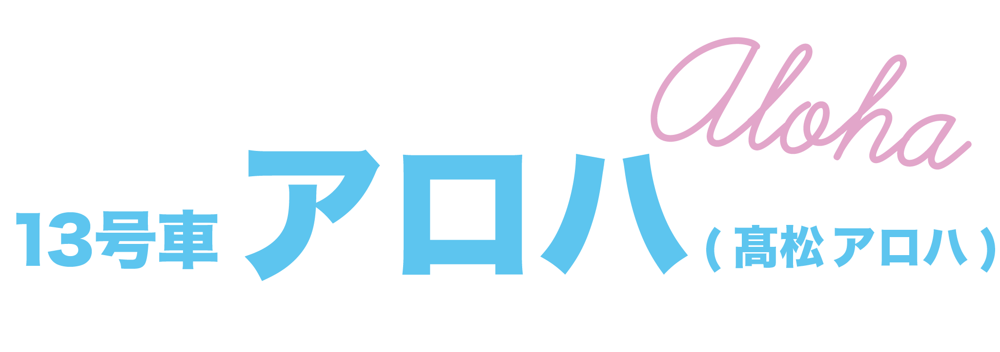

- ポジション：メインダンサー
- 担当：まっすぐ担当
- イメージカラー：ターコイズ
- 2000・10・26
- Instgram
まっすぐで素直な潔い漢！
キレキレのダンス・アクロバットでステージを一瞬で自分のモノに
運動神経抜群な生粋の陽キャです(特技は横飛び)
新たに加入した二桁ダンサー２人目のアロハくん！アロハは本名です！！！ご両親がハワイ好きということで名付けられました！
体育教師の父親とダンサーの母の間に生まれて、礼儀正しく、まっすぐ育ってきたため自身の意見や両親の意見を取り入れた結果「まっすぐ担当」になりました。
超特急に加入する前は、事務所の別グループで活動していました。そもそもアロハくんが事務所に入った理由は 超特急のようなダンスを生かしたグループで活動したいという思いがきっかけだそうです。 そんなアロハくんが所属していたグループが解散したタイミングでオーディションが開催され、熱い思いで参加し見事メインダンサーとして合格しました。
趣味はドライブ・スケボー・サウナなど多趣味です！そして特技は横跳びです。多分横跳びで検索すると高確率でアロハくんが出てくるかと思います笑 陽キャな見た目・趣味ですが、性格は本当に真面目、いやまっすぐです。
担当の通り曲がったことが嫌いで、真面目になんでも積極的に取り組みます。正直で誠実で、応援したくなる性格です！
そんなアロハくんのダンスはバチバチでキレのあるパフォーマンスです！
運動神経抜群なアロハくんはユーキくんと一緒にアクロバットをするほかに、ブレイクダンスもかまし、会場を沸かします。 アロハくんのダンスは特に個性的で自分の世界観がしっかりあるので空間を一瞬で掌握します。アロハくんのダンスは目が離せない魅力があります！
素直で潔い陽キャダンサー・アロハくんをもっと知ってください！！
公式の紹介ビデオです！
サムネのアロハくんが最高です！ダンスブレイクもかなりぶちかましてます🔥
アロハくんのメイン曲！ラップで楽曲にも参加しています！
Youtubeチャンネルのおすすめ動画!
地元民ハルを連れて東京をめぐる"アロハル"コンビVlog!
普段歌わないダンサーですが、実は歌えます！！